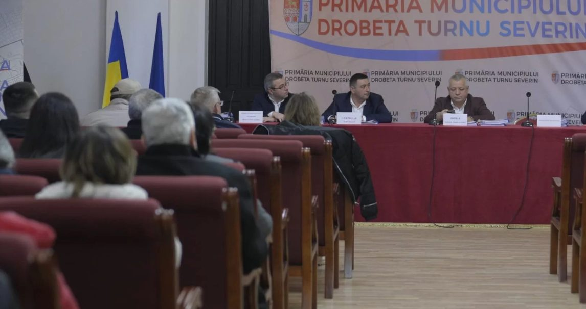
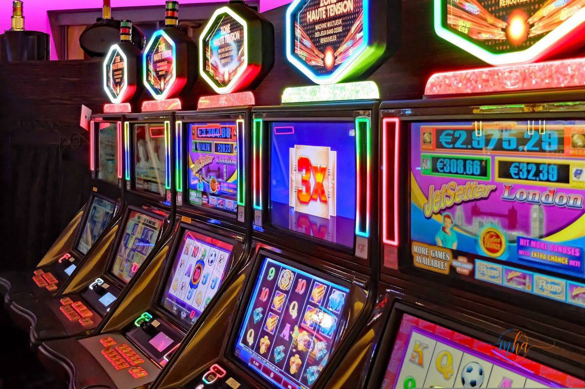

Ședința de astăzi, 31 martie 2026, a Consiliului Local Drobeta-Turnu Severin a adus pe ordinea de zi un subiect sensibil și controversat: viitorul jocurilor de noroc în municipiu. După dezbateri, consilierii locali au votat în favoarea menținerii activității operatorilor de profil, însă cu impunerea unor condiții mult mai stricte față de cele existente până acum.
🏛️ Date ședință — Consiliul Local Drobeta-Turnu Severin
| Data | 31 Martie 2026 |
| Subiect dezbătut | Reglementarea jocurilor de noroc în municipiu |
| Decizie | Menținere cu reguli stricte |
| Locuri de muncă în joc | 229 |
| Primar | Marius Screciu |
| Instituție | Consiliul Local Drobeta-Turnu Severin |

Sala de ședință a Consiliului Local Drobeta-Turnu Severin | Foto: MehedintiAzi.ro
Decizie asumată: menținere cu condiții stricte
Proiectul adoptat astăzi de Consiliul Local al municipiului Drobeta-Turnu Severin stabilește un nou cadru de reglementare pentru operatorii de jocuri de noroc care activează în oraș. Deși subiectul a generat dezbateri, consilierii au ales calea de mijloc: nu interzicerea totală a activității, ci impunerea unor reguli stricte menite să limiteze impactul negativ asupra comunității.
Noile condiții adoptate vizează reglementarea mai riguroasă a modului în care operatorii de jocuri de noroc își desfășoară activitatea în municipiu, cu accent pe protecția categoriilor vulnerabile și pe transparența în relația cu autoritățile locale.
Consilierii locali prezenți la ședința din 31 martie 2026 | Foto: MehedintiAzi.ro
Screciu: „Am fi pierdut 229 de locuri de muncă"
Primarul municipiului Drobeta-Turnu Severin, Marius Screciu, a luat personal cuvântul pentru a justifica decizia, invocând argumentul economic în fața criticilor:
„Este o decizie pe care ne-o asumăm, pentru că altfel am fi pierdut 229 de locuri de muncă. Am fi pierdut și mai mulți bani și ar fi existat, totodată, riscul ca aceste jocuri să funcționeze la negru."
— Marius Screciu, primar Drobeta-Turnu Severin
Argumentul edilului-șef al Severinului pune în balanță două perspective aflate în tensiune permanentă în orașele din România: pe de o parte, impactul social negativ al jocurilor de noroc — dependența, sărăcirea familiilor, problemele de sănătate mintală —, iar pe de altă parte, realitatea economică a sutelor de angajați ale căror locuri de muncă depind de această industrie.
Riscul jocurilor „la negru" — un argument cheie
Un aspect important invocat de primar este riscul ca, în cazul unei interdicții totale, operatorii să continue activitatea în ilegalitate, fără nicio supraveghere sau taxare. Este un fenomen cunoscut în România: acolo unde autoritățile au impus restricții dure fără a crea alternative viabile, o parte din activitate a migrat în zona gri sau neagră a economiei, scăpând complet de sub control.
Prin menținerea unui cadru legal cu reguli stricte, Primăria Drobeta-Turnu Severin speră să păstreze activitatea în parametri controlabili, să colecteze taxele aferente și să poată impune sancțiuni în cazul încălcării normelor.

Aparate de jocuri de noroc (slot machines) — foto ilustrativă | Foto: Pixabay
Un subiect care împarte opinia publică
Decizia de astăzi a Consiliului Local din Drobeta-Turnu Severin vine în contextul unui val național de reglementări mai stricte privind jocurile de noroc, mai ales în ce privește amplasarea sălilor de jocuri față de școli, grădinițe și alte obiective frecventate de minori. Subiectul rămâne unul sensibil, care împarte opinia publică între cei care consideră că industria generează dependență și probleme sociale și cei care subliniază importanța economică a sectorului.